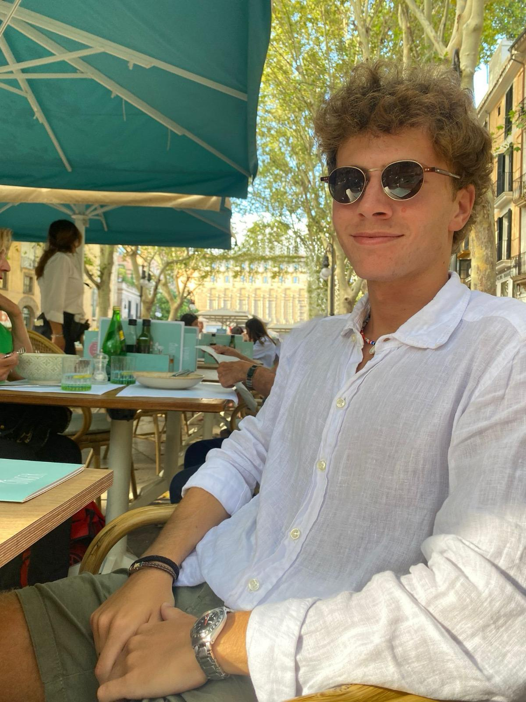
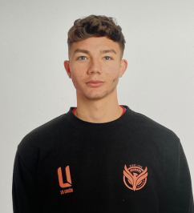
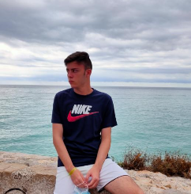

Miembros:
Andrés Marí Piqueras
andmari@ucm.es

"¡Hola! Soy Andrés, tengo 20 años, vivo en Madrid y soy un apasionado de la programación de aplicaciones web y los viajes. Disfruto programando y explorando nuevos lugares. ¡Encantado de conocerte!"
Álvaro Juan Martín Sánchez-Montañez
alvarm34@ucm.es

"Yo me llamo Álvaro, soy un apasionado del fútbol y estudiante de informática, por lo que formar parte de GoalLink es un orgullo."
Sergio Sevilla Romero
sergisev@ucm.es

"¡Hola! Mi nombre es Sergio , soy estudiante de informática y a la vez un cerebrito futbolero , mis amigos me llaman el maldini informático , entonces , os podeis hacer una idea de porque estoy aquí. ¡Es un orgullo!"
Marcos Ramos Navarro
marcra03@ucm.es

Soy Marcos un estudiante muy aplicado y trabajador, siempre dispuesto a ayudar y mejorar, además de un gran forofo del futbol. Será un placer trabajar aquí!